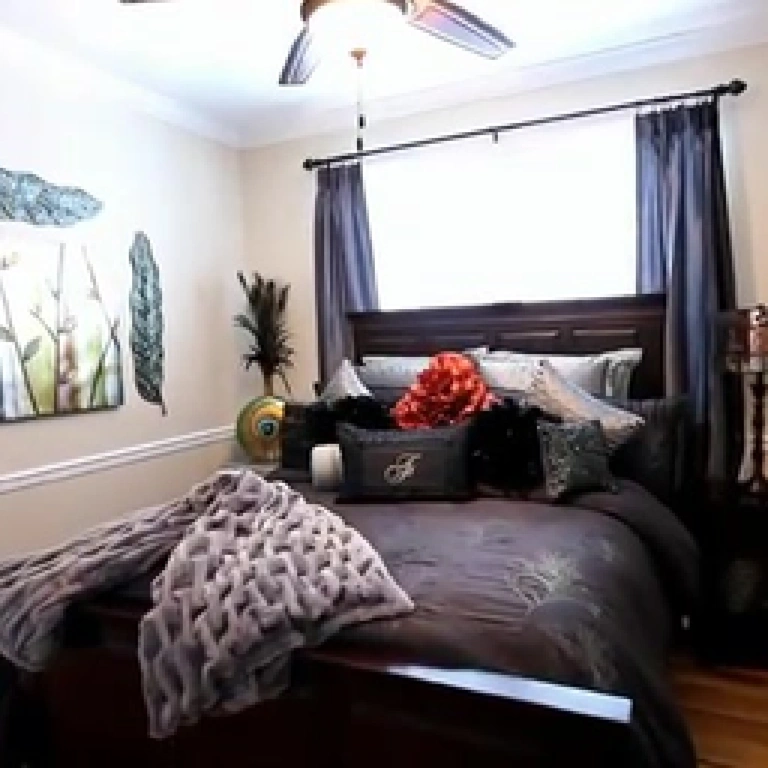
CQ
Query Q · 16-bit LSH
Hamming distance ≤ threshold
Cached C · 16-bit LSH
Cached depth anchor dc
Depth candidates · same global set
BaselineD
Cache hitD/R
A miss retains all D candidates.
Cross-view sampling → cost volume → U-Net → depth
4 × 4 TILE · CORNER PROBESOriginal S2 depth + Gaussian adaptor
L0Low feature varianceRepresentative
L1Else, low depth spreadDepth-weighted
FullElse, irregular tilePer-pixel adaptor
Only non-probe pixels follow the selected path.
Abstract
Depth-guided G-3DGS encoders reconstruct scenes directly from multi-view images without per-scene optimization. SCARF addresses two sources of redundant encoder work: FSDR reuses depth information across semantically similar features, while SAES selects a Gaussian generation path from local scene regularity before unnecessary primitives are created. A fused accelerator implements both mechanisms and delivers a 2.94-fold geometric-mean end-to-end speedup on the evaluated workloads, with maximum PSNR degradation below 0.072 percent.
Dataflow and Architecture
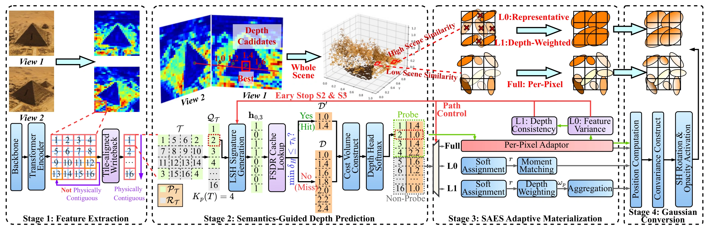
FSDR: Feature Similarity Depth Reuse
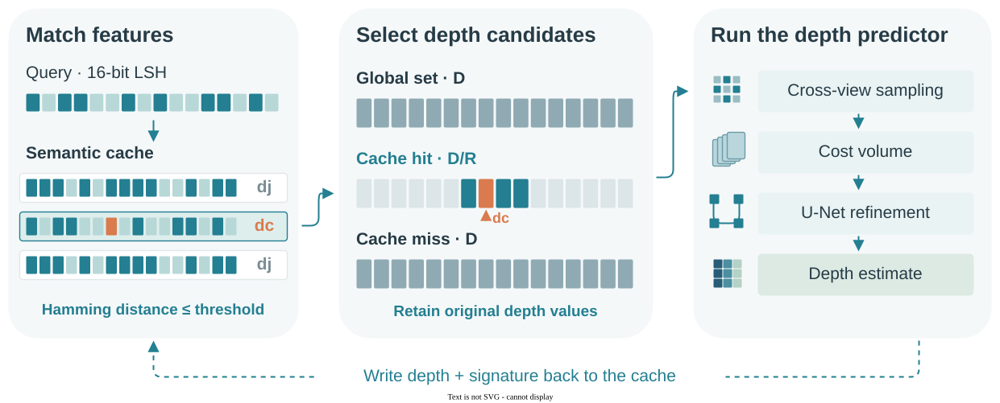
SAES: Scene-Adaptive Early Sparsification
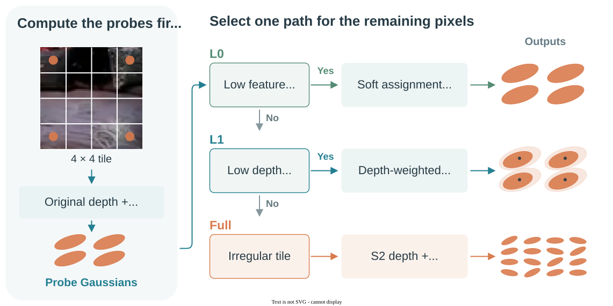
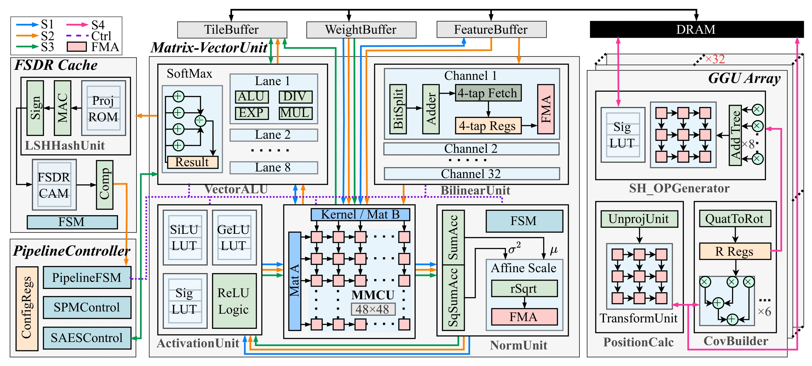
Qualitative Visualization
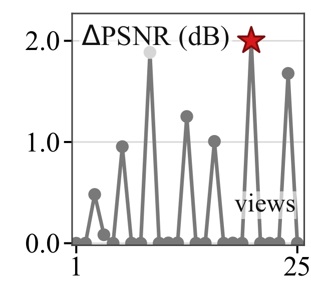
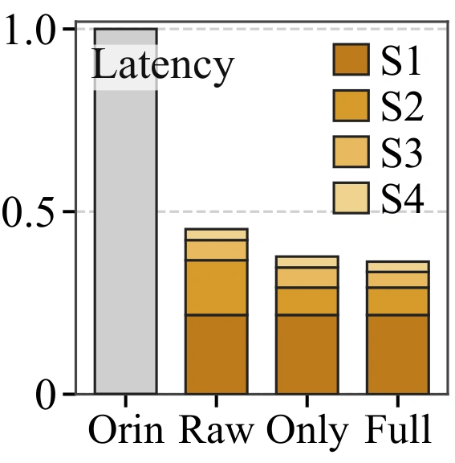
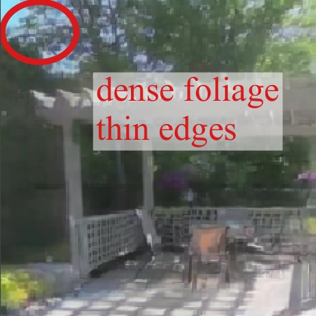
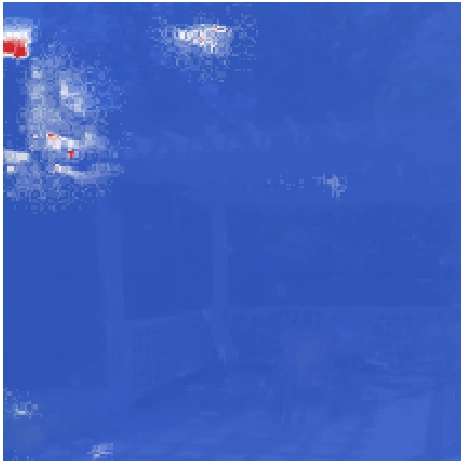
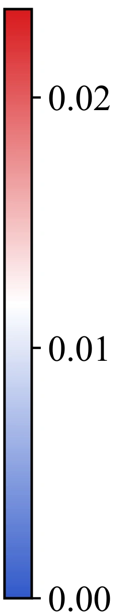
Presentation
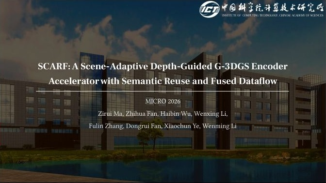
XIAOHONGSHU ↗BibTeX
@inproceedings{ma2026scarf,
title={SCARF: A Scene-Adaptive Depth-Guided G-3DGS Encoder Accelerator with Semantic Reuse and Fused Dataflow},
author={Ma, Zirui and Fan, Zhihua and Wu, Haibin and Li, Wenxing and Zhang, Fulin and Fan, Dongrui and Ye, Xiaochun and Li, Wenming},
booktitle={Proceedings of the 59th IEEE/ACM International Symposium on Microarchitecture},
year={2026}
}